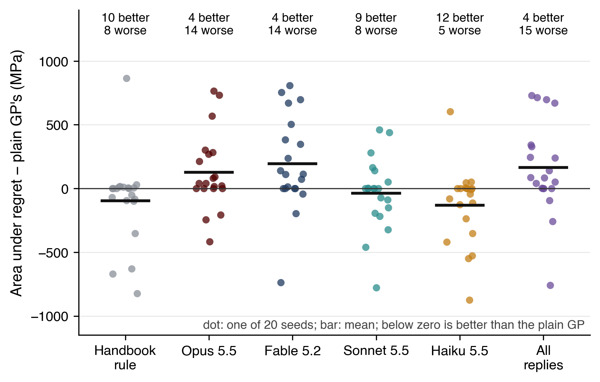

MATERIALS SCIENCE & ENGINEERING
TEXAS A&M UNIVERSITY
Department of Materials Science and Engineering
39

Opus: 4 better, 14 worse
p 0.033, Holm 0.149
Fable: 4 better, 14 worse
p 0.018, Holm 0.106
ρ at 5 labels still rose:
0.40 → 0.66 with Opus